For Bob Dylan and my mom
Preface
We all have hills we will die on. A crowd might gather around that hill and ask why someone chose that hill, maybe they disagree with the hill itself, or maybe they just disagree with the importance of dying for it. When it comes to recognizing Richard "Rabbit" Brown, all I know is I am dying on that hill. And I know why. My interest in Rabbit Brown began as most things did when I was 22 - with Bob Dylan. Dylan led to everything before him; in this case, it was the music section of a bookstore just off the LSU campus in 1997. I had transferred away from LSU two years earlier; one of my dealers had not. He was my first stop. The bookstore was my second. I walked out with the Anthology of American Folk Music, a thin red box set shaped for LPs, oversized liner notes concealing six recessed CDs on the inside. I flipped through the booklet, looking for "James Alley Blues". There it was. Track 61. Like the Highway 61 running less than a mile away from where I was parked. Like the album title of the person who led me there. I already knew a few things about "James Alley Blues". I knew there was a Dylan recording of it floating around; I knew that Bob had quoted a few of the lyrics in one of his songs; I knew the singer was from New Orleans; I knew the last three lines of the song. I felt like I knew the last three lines in a previous life. The song had a lot to live up to. And I wasn’t ready for it. I figured I’d listen to it around Meridian. By then, even my teeth would be numb. I slid Disc 1 of the Anthology into the CD player and began the drive back to Tuscaloosa and the University of Alabama. I could not miss another day of classes; "I don't have a drug dealer closer than Baton Rouge" was not an excused absence in 1997. Of course, I missed the next day of classes. And the next. And those decisions would one day lead me back to Richard "Rabbit" Brown. Missing days became weeks, and my final two semesters ended with 1 C and 8 Withdrawals. My brother told me I was focusing too much on one subject. I packed up my things and moved to Portland, Oregon, the city where young people go to retire. School was not over. Twenty-five years later, with five kids, work, I decided to return. What follows is the last assignment I must turn in to keep one of the two promises I made to my grandmother on her deathbed at her house a few miles away from that bookstore, that same year. She made me promise I would finish college and I would eat slower. This will make me one for two. She would have taken that at the time.
The End
Rabbit felt an intense pain in his stomach, then his lower back. It spread down his legs. He tried to stabilize himself but couldn’t. Everything in front of him blurred. He closed his eyes. A deep breath would make the pain go away, but he couldn’t even manage that. He needed help. His dad had passed away two years ago. His brother Arthur had died in ‘22. He couldn’t send for Margaret; she needed more time. His sister Vivian, she was the one he needed, she was the go-to, every family has one, but she had moved to Chicago. She’d taken their mom with her. What about James, they had grown close after Arthur died, but he was now in Chicago too. What was it with these kids and that city? What did they expect to find? They just weren’t willing to work like he worked. They weren’t willing to hustle like he hustled. He made it work in this city. Why couldn’t they? Why was he thinking these things? The next question wiped all the others away. The answer came right behind it. This moment, this place, in this way, this is how I die. It wasn’t his last thought, but it was the last one not deprived of oxygen. Rabbit went into hemorrhagic shock caused by the rupture of an abdominal aortic aneurysm. Richard Brown, a laborer, was dead. He was 43.
The Songster
Richard "Rabbit" Brown could have been a towering presence in the prewar blues, his name spoken alongside Charley Patton, Son House, Skip James, and Robert Johnson, if anything had just gone differently. He goes largely unrecognized; his name filed away, only to be pulled out on the deepest dives into prewar blues or a Reddit thread for our favorite Wilco covers. His name is rarely even mentioned in New Orleans, where the past is never dead, where its musical legacy is its identity. Other cities name their airports after presidents or civic leaders; New Orleans named its after a guy who played the trumpet and left the city at 21. The drummer for Manuel Perez's Orchestra is more likely to come up in discussion than Rabbit. But the story of Rabbit Brown is not just a story of a musician being under-appreciated or overlooked. That story is as old as popular music; the fact that we remember Gabriel blew his horn means there were probably a dozen other angels who probably blew it better. Rabbit’s story is one of an artist who remained in New Orleans when others left; the story of a black man, maneuvering his way through the Jim Crow South, trying not to waste a gift. Not only did the city keep his expectations in check, it kept his dreams there too. If you asked him what he dreamed of, it would have been a ride somewhere. His dreams did not go beyond the life in front of him. You can not write "James Alley Blues" and not possess the same intrinsic talent as some of the most revered artists of the prewar blues. Greil Marcus, arguably the finest literary music critic of his generation, was succinct: he called the song the "greatest record ever made". Any discussion of Rabbit's work could begin and end with "James Alley Blues", but it does not have to. Consider "Sinking of the Titanic", it is a song that Abbe Niles, the finest literary music critic of his generation, writes about in The Bookman in 1928. Listen to the profound truth Rabbit delivers in that song: "accidents may happen most any time and we know not when or where". "Downfall of the Lion" and "Gyp the Blood" were two of Rabbit's most recognizable songs, at least locally, yet they were never even recorded. Read the only lyrics that survive from "Downfall of the Lion": "I'm gonna tell you racketeers, something you can understand, don't let your tongues say nothin', that your head can't understand". Even if those were the best lines in the song, it still makes you want to hear the worst. You listen to "I'm Not Jealous" and how understated Rabbit conveys the anxiety of his woman's fidelity; he delivers us reprieves with two brilliantly funny lines: "everyone you meet is your relation, if they all your kin, you got a nation" and "on Rampart Street, you meet fellas by the dozens, you've got that cheek to tell me all thems your cousins". The lines are delivered to let us know that he does not find them clever. He knows he is supposed to laugh, but he is not going to. Humor is temporary. The pain was not. There is the genius of Southern literary figures like William Faulkner and Robert Penn Warren and then there is the vernacular genius we witness from some of the great prewar blues artists. The latter can be every bit as disciplined and profound. It is the humor in Son House singing, "I'm gonna get me religion, I'm gonna join the Baptist Church, I want to be a Baptist preacher, so I won't have to work". It is the torment of "Stones in my Pathway" by Robert Johnson. Those artists could not have written As I Lay Dying, but William Faulkner could not have written "I'm gonna tell you racketeers, something you can understand, don't let your tongues say nothin', that your head can't understand". And the oral transmission of Rabbit’s best lyrics bordered on masterful, both linguistically and the casual profundity they conveyed. As a guitarist, Rabbit was technically adept, mixing in ragtime and blues chord progressions. He didn't possess the technical skill of a Lonnie Johnson or Blind Blake; no one will listen to any of his songs and think there is a phantom guitarist somewhere in the background like when you hear Robert Johnson, but Rabbit used his guitar to tell the story, not be the story. When you write lyrics as well as he did, you do not let an instrument get in the way. His gift lay in the lyrics, not the notes. There is a reason Rabbit appealed to music critics like Abbe Niles and Greil Marcus. It was not for his musical innovation; it was the precision of his lyrics. It was why he first appealed to Bob Dylan and later Jeff Tweedy. These are people interested in the literary dimension to music as much as the sonic dimension. It is why Rabbit appealed to me. I wanted to write. That is all I wanted to do. And Rabbit could write.
The Hustler
Richard “Rabbit” Brown was not a music hobbyist; he was not someone who just looked at music solely as a means to extra cash. He was a person who treated music as a profession even though he knew it would never be his living. But he never seemed to quit trying. And if that meant hustling, he was not above it. Whether it was playing guitar on the street, performing in clubs, playing picnics and fish fries, hopping on trains to play in Baton Rouge, playing on the lakefront at Mama Lou’s, as Youngboy Never Go Broke said a century later, he’d “rather hustle 24/7 than slave 9 to 5”. Some of the songs written by Rabbit reveal the hustler in him: the “event songs”. Popular during his time, they were narrative-driven songs written about real-world incidents (usually disasters or crimes). The popularity of those songs and Rabbit’s willingness to deliver them meant more money, however meager; it meant more gigs, however bad. The reason they reveal a “hustle” is the idea of why Rabbit was writing them. It was more for an audience than himself. He did not have much of a choice. He was a gifted storyteller and event songs allowed him to put it on full display while also pleasing an audience. That is why, of the eight songs we know Rabbit wrote, half were “event songs”. Rabbit’s willingness to give the audience what it wanted did not separate him from others in the record business, then or now. The only difference is Rabbit was not writing those songs with any pretense about who they were for or why. That subject or style is popular; people like it; I am going to give the people what they want. You can call it transactional art. You can call it a hustle. For Rabbit, you just called them crowd favorites. Rabbit’s hustling was not limited to effort and art. Hustling was a Leatherman to be pulled out and used in daily life. Nothing revealed that side of Rabbit’s hustling better than an aside told by fellow musician Lemon Nash; Nash said, if Rabbit was playing on the lakefront and business was slow, he would pull a false alarm and then catch a ride back home on the fire truck. Whether this was a common occurrence or something he only did once or twice, it is revealing: a black man in the Jim Crow South catching a ride back home on the back of a truck full of white firemen, using a false alarm like the Uber app. The reason Rabbit was not arrested for pulling a false alarm: he was “friends” with all the white firemen; he would sing to them on the way home. That is not ‘separating a few dollars from a tourist’ hustling. That is hustling a social hierarchy. The adage is true: hustling is the hardest, most underpaid profession out there. And Rabbit’s hustling mostly seemed to come in pursuit of playing music. He seems to have given the people what they wanted when they wanted it. He was whoever he needed to be to whoever he needed to be it to. He was a hustler, both in effort and in action. And like most hustlers, the only life he seemed to think about was the one right in front of him.
There’s Nonplace Like Home
Richard “Rabbit” Brown sang he was “born in the country” in “James Alley Blues” and it was not a song one would mix in an adoptive perspective for a line or two (Brown). And it was the “born in the country” line and, more significantly, Rabbit’s vocal stylings that led historian Kevin Fontenot to question if Rabbit was actually born in New Orleans or if he migrated to it like so many other blacks before the turn of the century. Fontenot was right to question. Covington, Louisiana was once described by Walker Percy as a “nonplace”. Richard “Rabbit” Brown was the Richard Brown born in the heart of that nonplace on November 28, 1885. He was the fifth of eleven children born to Henry Brown and Agnes Bell. His first home was likely one of the worker cottages tucked behind white owned businesses on Boston and Gibson Street run by families whose names are still recognizable to Covington residents today. Rabbit’s father, Henry, was the oldest of 10 children to Thomas Brown and Sarah Jordan, freed slaves. The fact that Rabbit was born in Covington made sense. If you left New Orleans and headed north, it would have been your second stop in 1890 after you made it around Lake Pontchartrain. It was rural, but it offered a glimpse of life outside of a field. Like many other people of color who migrated to urban centers before the turn of the century, three generations of Browns from Covington began moving to New Orleans in the 1880s, mostly settling into a few square blocks around Poydras and S. Claiborne, the area the New Orleans Superdome, I-10, and its exit ramps encompass today. The first known address for Richard’s family was 248 Perdido Street. In 1887, Rabbit’s younger brother Randall was born in New Orleans and letters addressed to his father remained unclaimed at the Covington Post Office. Yet, Rabbit’s vocal style signaled a more rural upbringing, not moving to the city at two years old. His voice carried the imprint of the country, the sound of someone raised just beyond the edge of town. We have to consider that even more when, at 14 years old, Rabbit was back living in Covington with his sister Stella. With two older sisters, and other family, who remained behind, it is not surprising Rabbit would have spent time in Covington in his formative years, perhaps for extended periods. His vocal stylings might have been influenced by those periods, but more likely, it was simply the remnants of a deep heritage accent.
The Fisk School
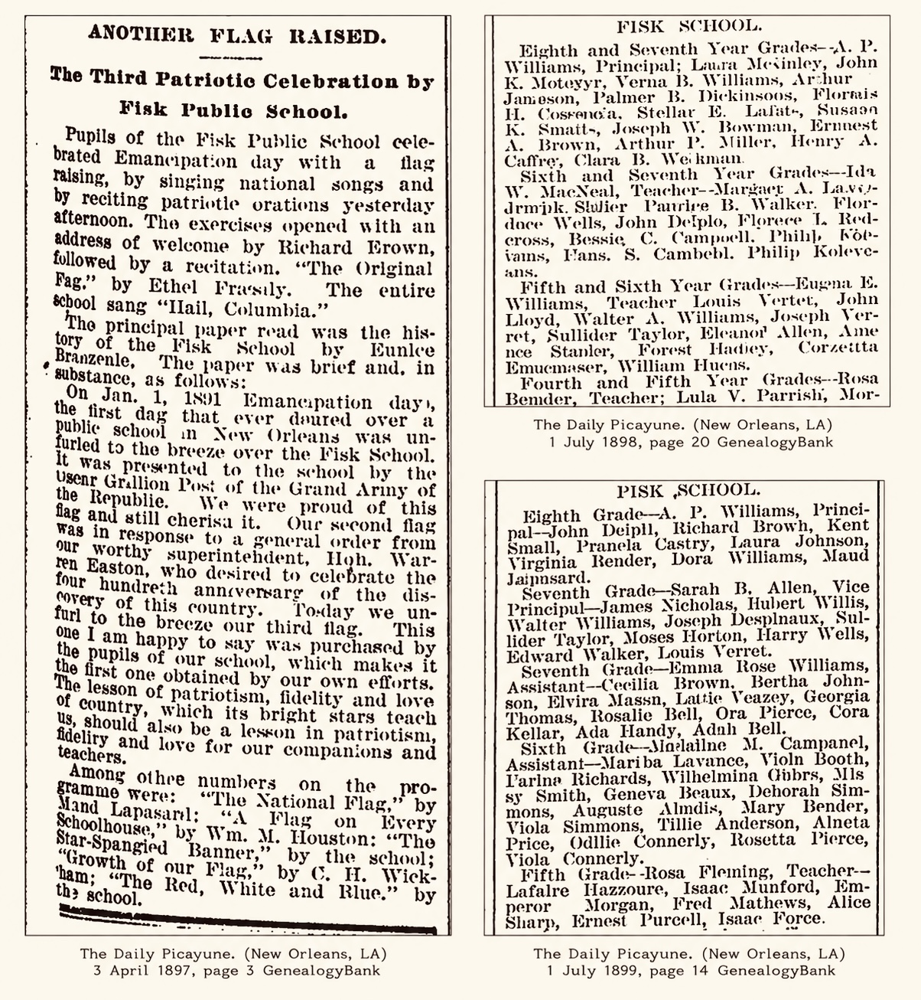
The formal education of Rabbit Brown occurred exclusively at Fisk Public School, one of the few common schools for blacks in New Orleans, located on the corner of Franklin and Perdido Streets. We can place Rabbit at Fisk because he appeared in the newspapers as a capable and disciplined student, regularly making the honor roll during his time there. At the end of sixth grade, he was singled out to deliver a presentation on Emancipation Day. The person who selected Rabbit for that honor was A. P. Williams, the principal of the Fisk School, who was not only a renowned educator, but also a singer and pianist. Despite operating with inadequate facilities, Williams seems to have cultivated an environment where both academic and artistic development were encouraged. That atmosphere may well have nurtured the early instincts that later made Brown such an incisive lyricist and performer. In the late 1800s, the Fisk School sat at a crossroads of the city’s emerging musical culture. Buddy Bolden had attended the school in the years just prior to Rabbit; Louis Armstrong would follow eight years after Rabbit graduated. And A. P. Williams was not the only influential figure shaping the school’s artistic life. His nephews, James and Wendell MacNeil, joined the faculty in the 1890s; both were members of the John Robichaux Orchestra, one of the most popular bands in New Orleans at the time. Grounded in the literacy and discipline of those surroundings, it is not difficult to imagine these influences taking root in Rabbit. And perhaps the most valuable lesson he learned during his Fisk years was seeing the lives of the MacNeil brothers outside of a school setting. They were successful musicians, not even ten years older than Rabbit when they joined the faculty. Rabbit would have seen them trying to balance full workdays with long nights and longer weekends. Their example offered a glimpse of both the demands and possibilities of a musical life. Whatever those demands were, they obviously did not scare Rabbit off.
Great Northern Blues
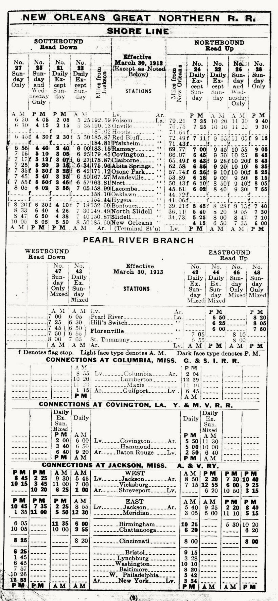
When Rabbit finished at Fisk School in 1899, he was almost 14 years old. There was no high school for him to attend. School ended in eighth grade for blacks; work began. That is how it went. The following summer, Rabbit was living with his sister Stella back in Covington, likely employed at one of the local mills or lumberyards, while easing the congestion of his parents’ household in New Orleans. Behind Rabbit were still younger siblings and, behind them, his oldest nephews and nieces. The next seven years of Rabbit’s life were probably defined by moving between relatives, staying with his parents and other kin when he was in the city, living with his sisters when he returned to Covington. Rabbit appears to have been arrested in 1903 for jumping on a train and again in 1905 for loitering near a train depot, surely waiting to jump on another. The long stretches of manual labor, any potential back-and-forth between Covington and New Orleans, and the uncertainty of odd jobs gave way to something different by the time Rabbit turns 20 at the end of 1905. New Orleans was undergoing a profound musical change. The decade after the turn of the century saw Storyville, the legalized red-light district in New Orleans that became an incubator for the birth of Jazz, at its cultural height. There were bars, clubs, saloons, brothels, and dance halls on every corner. Below Storyville, there were the formal and informal entertainment venues popping up between South Rampart and South Claiborne, an area that would eventually become known as “Back’O’Town”. And next to “Back’O’Town”, there were the sporting houses, alleys, and street corners of the “Battlefield”. These venues, legal and illegal, reputable and not, offered black musicians something largely unavailable to that point. It offered a return on investment. It offered something back for the work they put into their music. They were paid a fee to perform. They were tipped. At a minimum, they could pass a hat around. At worst, they made what they drank that night. It also offered someone like Rabbit an excuse to pursue what he wanted to pursue to begin with. In 1880, 49 blacks were listed as musicians in New Orleans. It increased to 55 in 1890 and stayed at 55 in 1900. Between 1900 and 1910, the number doubled to 112. This was occurring at the same time Rabbit was having to decide on how much energy and effort to devote to his music. And music was suddenly looking like more than just a hobby. It was looking like a legitimate side hustle. Rabbit was asked for his occupation over a dozen times during his life; he never used the word “musician”. It probably never even crossed his mind. Occupation was your livelihood. At no point in his life would Rabbit have been able to make a living from his music. But musicians were in demand when Rabbit turned 20 and we know he was working on his music during that time. Without knowing a lot else about Rabbit during that period, we know he was doing that because of what was coming down the line. By 1907, Rabbit is living in New Orleans year-round. He shows back up on public record when he is arrested for Disturbing the Peace on the corner of Gravier and Franklin Streets. It is the corner where Ann Cook is living at the time. She is the Ann Cook who, decades later, records two songs during the same Victor Records field session as Rabbit. Because Rabbit is the only one arrested at that location that night, and the fact that it is a simple Disturbing the Peace charge, it might be the first record of Rabbit performing. He was 21 at the time. The darker period on Rabbit’s public record that occurs between 1900-1907 might be illuminated by a single song title. Five songs survived from Rabbit’s 1927 Victor recording session. A sixth, “Great Northern Blues” was destroyed. When the East Louisiana Railroad Company was incorporated in 1887, train travel from Covington to New Orleans became routine, by lawful and unlawful means. It was one of two rail lines Rabbit would have traveled going between Covington and New Orleans. In 1906, East Louisiana Railroad merged into the New Orleans Great Northern Railroad, connecting New Orleans and Covington under one system, providing a single, unified name for the route: the New Orleans Great Northern Railroad. Rabbit would have been making that trip often during the same the time he was writing some of his earliest songs or he would have been able to draw on the experience later. It is not hard to imagine the isolation he would have felt being passed between two starkly different worlds with a home in neither. Rabbit would have ridden the same route many more times in his life to visit family in Covington or play events in the resort towns north of Lake Pontchartrain, but the feelings he tried to share with us in “Great Northern Blues” probably began on the trips he made back and forth to Covington as a teenager.
Marriage in Minor Chords
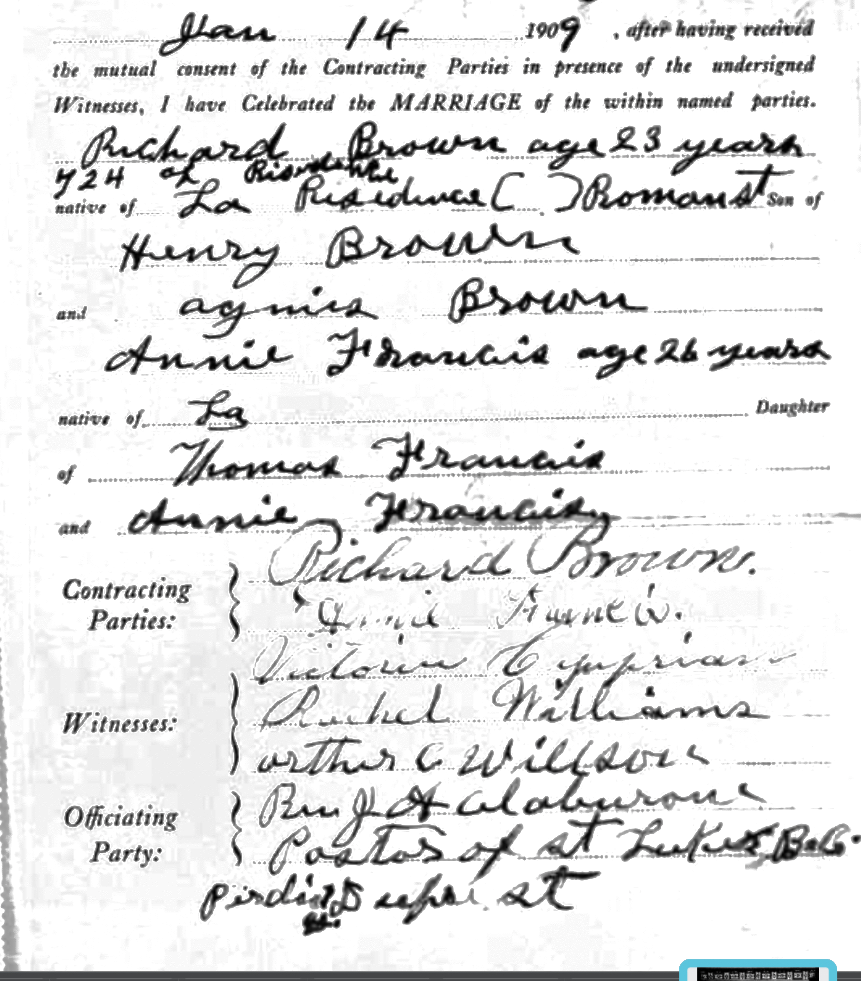
Behind every aspiring musician, there is a woman concerned about being left if they have any type of success. In 1909, Rabbit marries Anna Francis. They move to 713 Clara Street, next to his uncles Wesley, Willie, and James. At 25, it is the first time Rabbit has his own place and a landlord. Rabbit knew music would never make groceries or rent, but he might have been learning about the issues it created with steady employment. Marriage would have given him a clear sense of what an ordinary life looked like and the expectations that came with a family. And Anna would have faced what it was like to be married to someone who wanted more than the daily life of a married laborer and we do not know what marital pressures came along with it. Rabbit is listed as a “carpenter” for much of his life, but the only job we know he held for sure was with the New Orleans Brass & Iron Works in 1917. Whether due to marital discord or simple finances, within two years of them getting married, Richard and Anna are no longer living together. And when Rabbit is set to become a father for the first time that same year, it is not Anna carrying his child. The only definitive statement one can make about Rabbit and Anna’s marriage is that it was a train wreck. We do not know any of the details, but any investigation into it probably would not begin by looking at Anna.
The Darktown Hit
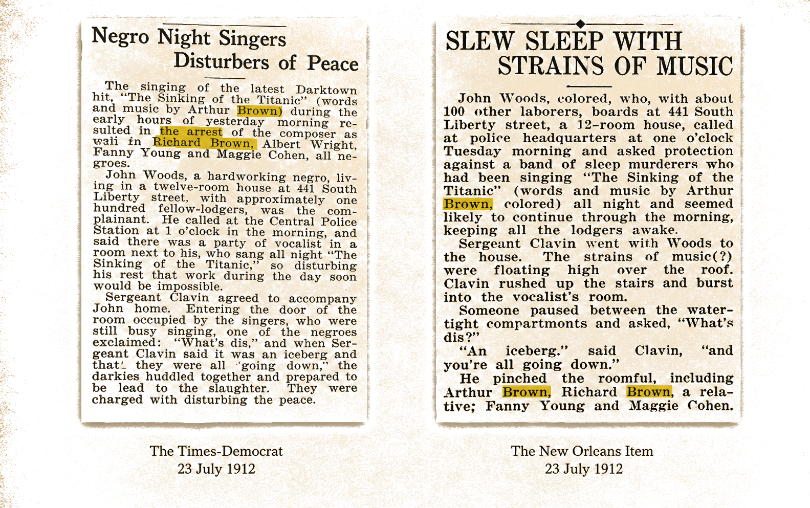
If his marriage was deteriorating, Rabbit did not spend much time reflecting. He was too busy writing. He and his brother Arthur, and three other individuals, are arrested for Disturbing the Peace in July of 1912 and the arrest makes the papers. Rabbit’s crime: playing his “latest Darktown hit”, “Sinking of the Titanic”, too late into the night. Arthur is mistakenly given credit as the composer in the newspaper, but that’s irrelevant. For anyone interested in Richard “Rabbit” Brown, the article seemed too good to be true. While it did not give us any insight into who Rabbit was or where he was from, the arrest ledger from that night did. It listed Richard Brown, age 26, at 1956 Poydras. And that single line is what will allow Richard “Rabbit” Brown a biography going forward. Up until the arrest articles and the police ledger, the only record of Rabbit’s existence was the six sides he recorded for Victor Records on March 11, 1927. Now we knew where he was on one night in late July 1912 as well. The arrest articles also reveal that “Sinking of the Titanic” was written within weeks, if not days, of the disaster. We know this by looking at the time elapsing between the disaster itself and how long it would have taken for the song to become “a hit” without a recording or airwaves to spread it. It is a local “hit” less than three months after the Titanic sank to the bottom of the ocean. Bob Dylan is said to have written “Blowin’ in the Wind” in ten minutes. Leonard Cohen spent five years writing and perfecting “Hallelujah”. It would be foolish to judge Cohen and just as foolish not to appreciate the ability of artists like Dylan whose immediacy leads to prolificness. The newspaper articles revealed that Rabbit produced work with immediacy, so it should come as no surprise that he was also prolific. And we know the latter because the musicians who knew him spoke in awe regarding the sheer number of songs in his catalog: “(Rabbit) knew so many of them…he always had a new one…I never knew what he was playing.” It sucks to think of how many of those songs have been lost to time. They existed. They were heard. They moved people. But like Rabbit, they were once everywhere and now nowhere to be found. And while “Sinking of the Titanic” would gain broader popularity after it was recorded in 1927, until the discovery of these newspaper articles, we lacked any evidence of the true reach of Rabbit’s music during his active years. It went beyond musical circles. Bricklayers, boilers, river packets, and furniture repairmen across the city could have sung a few of his songs in their time. It turned out, Rabbit had lived a much richer musical life than a songster who had a few works resurface long after his death.
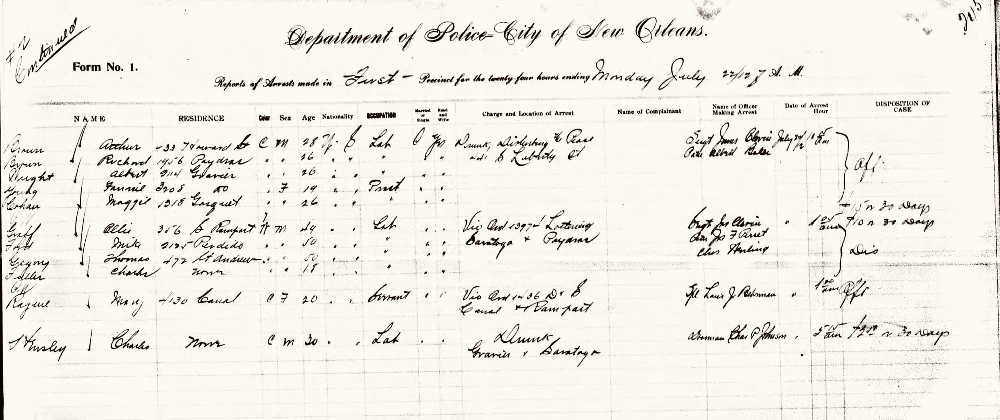
Another Side of Bobby Dunbar

Rabbit’s other event song that would make it to wax in 1927 was written about an event that occurred five weeks after the “Sinking of the Titanic” arrest. On August 23, 1912, four-year-old Bobby Dunbar vanished in the woods near his parents’ cabin in Opelousas, Louisiana, inspiring “Mystery of the Dunbar’s Child”. In a third-person narrative, Rabbit’s lyrics capture the emotional complexity of the Dunbar case; in a story that soon hardened into two diametrically opposed positions, he manages to remain empathetic to both, while being accurate at the time and historically. The song’s length suggests that it became a topical ballad, accumulating verses as the case unfolded. The final lines of the song celebrate the fact that William Walters, the man accused of kidnapping Bobby Dunbar, had been freed from prison. In reality, Walters’s innocence was not definitively established until DNA testing almost a century later. He continued to live under a presumption of guilt for the rest of his life. Rabbit did not need DNA testing to make up his mind on Walters’ innocence. He had seen the story before. “Mystery of the Dunbar Child” represents Rabbit’s closest engagement with social commentary; Rabbit uses William Walters, an itinerant white laborer, as a proxy for the black experience: one marked by wrongful accusation, presumption of guilt, and systemic vulnerability. It was a reality Rabbit knew well, even if he was forced to articulate it through a white figure. What is also notable is Rabbit’s depiction of New Orleans, where much of the Dunbar legal case unfolded. He associates the city with “safekeeping,” “prosperity,” and justice. Those were ideals that, in reality, only extended to white citizens. Rabbit was acutely aware of his audience and the social context in which he performed. If he was going to venture a critique, it required the protective framing of familiar tropes and communal expectations to soften the risk. Basically, he was not going to piss off his audience. He needed to separate them from their pennies and nickels. “Mystery of the Dunbar Child” is likely written within weeks of the kidnapping or eight months later when Bobby Dunbar is supposedly located in Hub, Mississippi. But the final verse could not have been composed until 1915. The fact that Rabbit continued adding verses and that he was able to summon all of them more than a decade later during his recording session, suggests that the song held personal meaning for him. In its careful layering of narrative detail, emotional nuance, and coded social critique, it is the kind of song that his former principal at the Fisk School, A.P. Williams, would have been particularly proud of. “Sinking of the Titanic” and “Mystery of the Dunbar Child” are not songs one would inherently credit with coming from a genius, but they are remarkable songs, especially considering Rabbit was writing about stories he had only followed in a newspaper. A third event song that would not make it to wax was inspired by another event that occurred only six months after the Dunbar kidnapping, but the subject matter for “Gyp the Blood” might have come at a price.
Play Sinking of the Titanic
Rabbit would have been able to capitalize on writing “Sinking of the Titanic,” and any recognition that came with it, but we do not know how much or for how long long. Because on Easter night in 1913, Billy Phillips was killed at the Tuxedo Dance Hall in Storyville. It inspired one of Rabbit’s most famous event songs, “Gyp the Blood”. Yet that same killing would lead to the closing of five dance halls. Initially, Rabbit would have heard the story and only thought he had the subject of his next song. Instead, it became one of the catalysts for the Storyville shutdown in 1917. It is difficult to say how impactful the Storyville closings were on Rabbit. Historically, we know it eventually led to an exodus among young musicians in the city, but Rabbit’s music does not fit neatly into the narrative of the Storyville closings. Lemon Nash recalled Rabbit playing “Downfall of the Lion” at Tom Anderson’s in Storyville. However, that is the only thread connecting Rabbit to Storyville other than his writing “Gyp the Blood” about a murder that occurred there. An archival reconstruction of Rabbit’s life simply does not place him in Storyville. It might not have been what was occurring in Storyville that impacted Rabbit the most; it was the city tightening social controls outside of it as well. The years on either side of Storyville’s closing closely align with intensified policing in other areas of the city. The same forces that shuttered dance halls in Storyville: moral reform campaigns, policing pressure, and vice squads had spread throughout New Orleans during that period. Even before Storyville closed in 1917, police began cracking down on informal gatherings like fish fries and picnics; those are settings Rabbit often played. Were there offers Rabbit might have been able to take advantage of if Storyville had not closed, ones more desirable or better paying than fish fries and picnics? The answer is yes, if only because fewer venues meant more competition among musicians, and that meant more travel or less pay. One would think this period, 1912-1917, would have been Rabbit’s most active as far as performing, judging by his age and the topics of his surviving songs; but if he was active in the city, Disturbing the Peace and Loitering charges would have resulted. The lack of evidence of those might provide context for why Rabbit was known to hop trains to play picnics in Baton Rouge and why he expanded to the New Orleans Lakefront, playing at the restaurant Mama Lou’s. The most repeated anecdote about Rabbit involves his time on the lakefront; it was said he would row people out on Lake Pontchartrain and sing to them for a fee. That will raise eyebrows among anyone familiar with the mercurial temperament of Lake Pontchartrain; knowing what they know, they would prefer passage on the Titanic. But the anecdote, real or not, is indicative of how far Rabbit seemed to go to make music work for him, living where he did, when he did. The intensified policing during this time might also explain why Rabbit was said to play in Jane Alley. It was only a mile away from where he lived and it is an area police did not regularly patrol. The police were not even comfortable there. Ironically, one of the most dangerous places in the city would have been one of the safest places for Rabbit to perform if he did not want to risk a night or two in jail. Leading up to and following Storyville’s closing, facing crackdowns throughout the city, Rabbit seems to have adapted. It was not by pushing back against the system, but by slipping through its gaps and finding stages where they still existed. One thing we know about Rabbit is that he worked every angle of the system, but he did not fight the system. For all the arrests, twelve that can be definitively linked to him by address, and likely four to six others, none of those arrests include a “resisting” charge or even an “obscene language”. Rabbit complied with the authorities every time, no matter the circumstances. He was of a generation that had seen the consequences of not.
Can I Please Crawl in Your Widow?
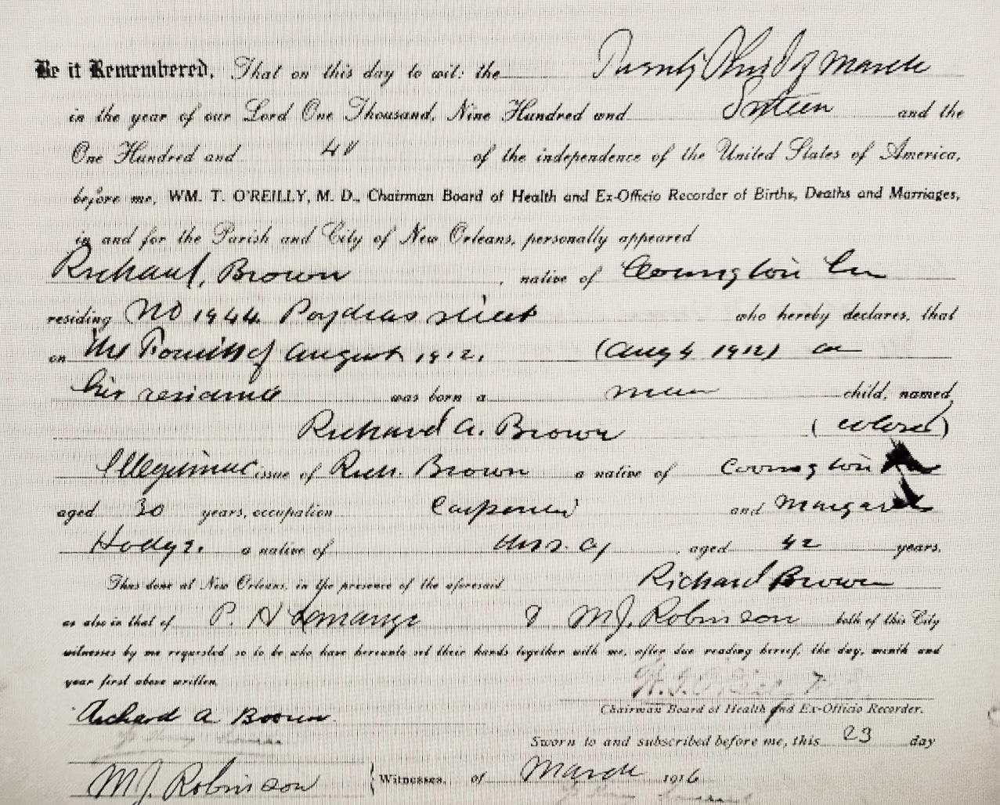
In 1912, days after walking out of the parish jail for the “Sinking of the Titanic” arrest, Rabbit becomes a father for the first time. The mother of Richard Brown Jr. is a 38-year-old widow named Margaret Hodge. It is unclear when Rabbit first crossed paths with Margaret. He might have been as young as 15, for sure by the time he turned 23. She was ten years older than him; she had four children; she had married - and been widowed - young. There is a chance Rabbit relied on her hospitality prior and during his marriage to Anna. She lived near Rabbit in 1900 and next door to close kin in 1910. From the outside, Rabbit’s decision to move in with an older woman with four children might seem opaque, especially considering it occurs during a time when it was much more common for black men to marry younger women, often due to economic factors. Rabbit does the exact opposite, but it might have been for similar motivations. Rabbit had not been able to keep his first residence for much more than a year. Margaret had already kept hers, as a widow, for almost a decade. At no point in her life was Margaret ever a boarder. She did not own it, but she always had a house. She had children in the workforce to help make the finances work. And except for her years with Rabbit, she was always listed as ‘head of the household’. And the only reason she might not have been listed as that during her time with Rabbit is he might have answered the door the day the census enumerator knocked in 1920. Margaret’s mother had managed to provide the same type of house for Margaret; and like Margaret, she had done it without a husband. As close as there was to stability for people of color in the New Orleans Third Ward during that time, Margaret and her mother had provided it. And done so without men. That might have appealed to Rabbit more than aesthetic beauty or emotions. What Margaret might have provided him was a place he knew he could go home to, no matter the time of night, no matter the day. He would have contributed to rent, groceries, coal, and other expenses, but it would not have been solely up to him, as it had been when he got married to Anna. The further he traveled to play, the more often he played, the more he would have needed just that type of space. If there is anything close to domestic years for Rabbit, it is the ten years following the birth of his son. He is living with Margaret, her adult children, and Richard Jr., next to his sister Vivian and next to his parents. There is not a single arrest during that period that we definitively know is him. In comparison, Rabbit was arrested 3 times in the 13 months prior to Richard Jr.’s birth. That is not to suggest that becoming a father settled Rabbit down. It just coincided with he and Margaret moving in together. That stable environment seems to have given him a relative amount of security to pursue his music, as much as could be expected for a black laborer at the time. And it was needed because intensified policing was driving him further outside the city or into the poorest, most dangerous pockets of the city to play.
The Zulu Parade
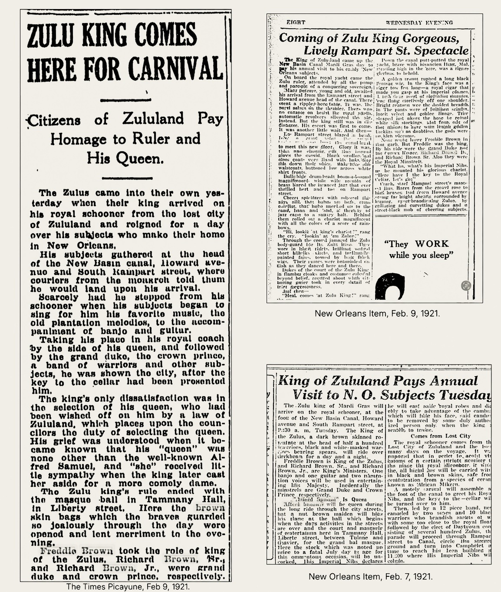
February 8th of 1921 would have been a special day for the Brown family. It was Mardi Gras Day. Rabbit and Richard Jr. were the Grand Duke and Crown Prince of Zulu. Historically, it is not a parade one would associate with Rabbit, but Zulu was not what it is today. The Zulu Social Aid and Pleasure Club was “working class”. There was no physical headquarters with a bar, offices, and staff who do not return phone calls for people doing research. While Rabbit did not necessarily fall into the typical “working class” category, or any category, Freddie Brown, the Zulu King in 1921, did. And so did Randall Brown who was in the Court. And Freddie and Randall were Rabbit’s brothers. It’s good to be king, even better to be related. And the King needed his Royal Minstrels. It would have been one of the few days Henry and Agnes Brown, Rabbit’s parents, might have been able to enjoy, especially since the temperature had risen to the low 70s when Zulu began to roll at 9:00. Henry and Agnes had raised kids and grandkids for 45 years, only one grandson, James, who they raised as their own, was still living with them. They had done their part. And one of the children they raised, Vivian, was probably the one who took them to the parade. And James might have joined them. They would have seen Freddie, Rabbit, and Randall at their heights. Freddie as King of the Zulus. Rabbit providing the music for everyone. Randall in the court. Being in Zulu did not mean you were successful or wealthy, but it did mean you were established. And the Browns, after 35 years in the city, were established. If they did not know it before, Vivian and James would have known it on that day. Freddie was working for the Illinois Central Railroad. Randall was a longshoreman. And Rabbit, they were not sure what he was doing for work at that moment, but they knew his songs. The three older brothers would not have had many better days. It was an opportunity afforded to them by the sacrifice of their parents. And that sacrifice meant Vivian’s sons and James would have the same opportunities in the future. It was Rabbit who took Vivian to the courthouse to get married ten years earlier. It is Rabbit, 7 months after Zulu, who brings James to the courthouse to marry Irma Sewell. Irma was pregnant. They would have a boy, James Jr. James Sr. and Irma might have told Rabbit that, if they had a second son, they would name him Richard. It was a promise they kept.
The Coal Fire
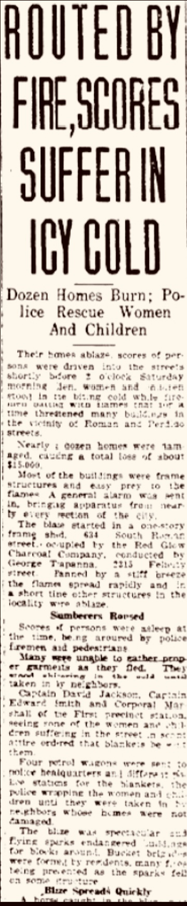
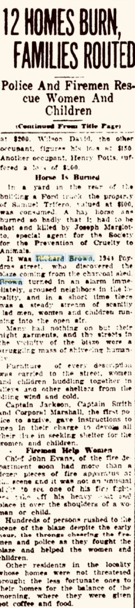
Rabbit’s feet were frozen on the walk home. He was a colored man in the Jim Crow South: disease, violence, and death surrounded him and the only thing he couldn’t handle was the cold. The rent party had been a bust. People were still recovering from Mardi Gras. No one had a full week’s pay and coal peddlers had broken in on those dollars first. Rabbit only went because the alternative was to stay home. Now he was just hoping to get the fire going without waking Margaret. That would be a heavy price to pay to warm his toes. When Rabbit was almost to Bolivar St., he heard metal begin to rattle. Suddenly a flash of orange shot up in the night. He knew exactly what it was. He knew where it was. It took another minute to get a view that confirmed it. A coal shed was burning across from his old house on Roman. Rabbit ran to the call box on the corner of Poydras and pulled it. It was the first time he called in an alarm when he wasn’t just needing a ride. Then he crossed the street and ran inside his house. He woke Margaret and the kids. He told Richard Jr. to run next door and wake Vivian and James. He didn’t have to tell Jake anything. He started doing it. Then Rabbit was gone. Back towards the fire. He banged on the doors closest to the fire. As soon he heard movement inside, he moved to the next door. He kept screaming “fire” the entire time. The wind was blowing north, the opposite direction from his home. That made the decision easier. He’d wake as many people as he could, so they could save as much as they could. And he didn’t stop bagging on doors until his white friends from the fire department showed up and told him he could. In the early morning hours of February 17, 1923, seven houses on the block bounded by Claiborne, Roman, Perdido, and Poydras burned to the ground before the fire was extinguished. They were home to eleven families. Insurance appraisers were on site within hours. The owners received good news. The homes were insured. The black families that Rabbit had woken, the people who rented the homes, they lost everything except what they dragged into the street. Insurance did not cover anything: no furniture, no clothes, no contents. They received a blanket from the fire department that they did not have to return. Mrs. Mary Ford of 3419 Canal Street was paid $1,400 for the shed where the fire originated and George Trapanna of the Red Glow Charcoal Company, who leased the shed from Mrs. Ford, was reimbursed $1,000 for the coal that almost burned the entire block down. Vivian and James would have watched it all. The only difference between their young families and the ones standing in the middle of the street was the direction of the wind. A year later, Vivian and James moved to Chicago. They took their mother Agnes with them. Vivian and James had witnessed everything New Orleans had to offer, but they saw what Henry and Agnes saw 35 years before, they just saw Covington.
Not Dark Yet
In 1926, Rabbit and Margaret separate. She was a widow. He was married to someone else. There was no paperwork. Rabbit moves to 742 S. White Street, a block from Jane Alley. More precisely, his backyard was Jane Alley. It is the area we think Rabbit would have lived near his entire life if we did not know any better. After all, some of the only details we knew about Rabbit is that he lived near Jane Alley and hung around the area in New Orleans known as the “Battlefield”. The most famous description of the Battlefield is in Louis Armstrong’s autobiography Satchmo. He said, “…in that one block between Gravier and Perdido, more people were crowded than you ever saw in your life. There were church people, gamblers, hustlers, cheap pimps, thieves, prostitutes, and lots of children. There were bars, honky-tonks, and saloons, and lots of women walking the streets for tricks to take to their ‘pads’ as they called their rooms”. New Orleans jazz bassist Eddie Dawson locates the Battlefield from “Claiborne to Broad, Gravier to Poydras”. There are a few reasons Rabbit gets so closely associated with Jane Alley. First, Jane Alley and the Battlefield get conflated due to their prominence in the biography of Louis Armstrong. Rabbit lives in the Battlefield his entire adult life, but he only moves near Jane Alley at 40. Another reason for the association is that “James Alley Blues” was a bastardized title of Jane Alley. Also, some of the musicians who spoke on Rabbit, captured in the Hogan Jazz Oral History Series, played in clubs closer to the river. They were younger than Rabbit and there were not a lot of crossovers with their music. They knew of the Battlefield, but not all of them lived there, like Louis Armstrong and like Eddie Dawson. And if you did not live there, you usually would not be there: the discrepancy in descriptions of where it was located reveal that. What is clear is that Rabbit was at home in the Battlefield. He played there. He hung around it. He lived in it his entire adult life. Yet, this was the first time, at 40, that he lived near Jane Alley. And it was almost a mile from every other place Rabbit had lived; when that is the same few blocks, it seems even further. The move would be a mystery in any context other than that was where he could afford to pay the rent. It was $12 a month, almost half the amount of 1944 Poydras. Margaret moves as well, but it is only one block away from 1944 Poydras and her rent is actually more than it was when she and Rabbit were together. She was obviously not concerned with making the finances work without Rabbit. She still had an adult son living with her and now Richard Jr. is in the workforce. He’s 14. Margaret always managed to keep a house, before, during, and after Rabbit. Whereas Rabbit’s only period of housing stability as an adult occurs during his time with Margaret. In all likelihood, Rabbit only moved to Jane Alley because $12 is what he could afford to pay in rent. However, 32-year-old Virginia McKenzie, newly divorced, might be able to contribute. She and Rabbit are living together soon after.
The Victor Recordings
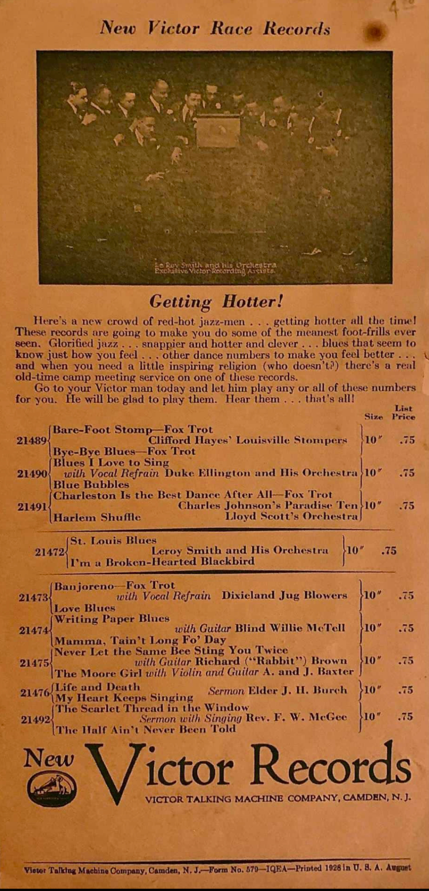
On March 11, 1927, New Orleans was coming off a month of historic rains. Floodwaters were spilling into lower regions of the Mississippi Delta. Anxiety and river levels were high in New Orleans, but none of that was on Rabbit’s mind. It is the day Rabbit records for Ralph Peer and Victor Records. What did Rabbit think about the opportunity to record his songs? Did he think of it as a way to make a few extra dollars, as some of his contemporaries did at the time? He did. Did he give it consideration beyond that? That is answered by looking at everything that led up to that day, by looking at all the arrests that resulted in pursuit of his music, by the lengths he went to play his music, by the travel, by the trains…by us knowing that the three professional musicians, who knew him, all spoke in awe of the number of songs he could play. These were professional musicians being interviewed in the late 1950s when “musician” was a profession: one they were able to live long enough to experience. Those musicians spoke in awe at the sheer number of songs a “carpenter” could play. Rabbit had to hear those songs. They had to be learned. If they were his original compositions, they had to be written. They had to be perfected. When the 12-bar blues structure first came about, the only song we know Rabbit wrote after it, had it. He had heard it. He implemented it. This is not someone who just viewed music as a way to make extra cash. It is someone whose entire life is shaped by music. By 1927, records were not a novelty. Rabbit had heard records played; he knew musicians who had recorded songs in other cities. Rabbit knew recording was a big deal. What is unlikely is, until the day the recording session was scheduled, did Rabbit think it was possible for him to be recorded. The technology simply did not exist in New Orleans. Rabbit probably never imagined being recorded if only because of where it was happening: the city he lived. The opportunity to record might have come before he had the chance to dream of it. Rabbit was not one of the first musicians to be recorded in New Orleans, but you can say that he was one of the first once recording technology became “viable”. Aside from the pioneering Okeh field sessions of 1924 and 1925, and a Columbia 1926 session that produced several sides by Reverend J.M. Gates, commercial recording activity in New Orleans was nonexistent when Ralph Peer arrived in early March of 1927; Peer had overseen the Okeh sessions a few years earlier. Peer either learned of Rabbit during that trip or not until he is in New Orleans for the Victor field session. Judging from the fact that Rabbit is the final musician recorded during the 1927 session, it would make sense that Peer learned about Rabbit from one of the artists he recorded earlier in the Victor field session. And that artist would have likely been Ann Cook. Ann Cook, who also went by the alias Annie Johnson, worked as a prostitute and singer in Storyville. She has been painted as everything from a “den mother” to a murderer. Louis Armstrong devotes an entire section of his autobiography to her, although he never refers to her by name. In interviews decades later, Storyville musicians, like Armstrong, describe Cook as shielding them from abusive patrons, feeding them when they had no money, and insisting they receive the full pay. They also describe her as being one of the toughest “sporting women” in the Battlefield, crediting her with killing anywhere from three to seven men who crossed her. Ann Cook records two of her songs for Victor Records four days before Rabbit. Four days might have been just enough time for her or Peer to locate Rabbit and schedule a session with him. There is no evidence that Victor recruited musicians through newspaper ads for the New Orleans field session, as they did in Bristol, Tennessee a few months later. In total, ten acts were recorded during Victor’s time in New Orleans; most of those artists recorded two or three songs. No act recorded more than four songs. Rabbit recorded six. As for the location of where the recordings were made, it was not at the St. Charles Hotel, as has been suggested in some places. While Victor Records did use the hotel for field recordings years later, those musicians were white. The liner notes of the Anthology of American Folk Music are probably closer to the truth. While the liner notes mistakenly have Rabbit recording on the same day as Louis Dumaine when it was four days later, they mention them both recording in the same garage. Other sources mention Dumaine’s session being recorded on Baronne Street. Ralph Peer had utilized the Roosevelt Hotel on Baronne (formerly the Hotel Grunewald) for his Okeh sessions, so Rabbit is likely recorded in a garage, warehouse, or office space around it somewhere. There was a small, detached garage in the parking lot of the Roosevelt Hotel and there is a good possibility the sessions took place there. On Good Friday, April 15, 1927, 15” of rain fell on New Orleans in an eighteen-hour period, leading to widespread flooding in parts of the city. With river levels already at record highs, city leaders and the Louisiana State Board of Engineers, with pressure from the business and banking communities, decided to blow up sections of the levee down river to try to spare New Orleans. If Rabbit was still writing “event songs”, he would have written one about the Great Flood of 1927, as Charley Patton did with “Highwater Everywhere”. And now he knew it was possible to record those songs and record them in his own city. Because only a month after Victor’s field session wrapped up, Columbia Records would return to New Orleans for its second field session in as many years. Columbia returned in 1928 as well, the same year Brunswick Records conducted its first field recording session in the city. By 1929, Vocalion, Okeh, and Columbia all sent field units to New Orleans.
James Alley Blues
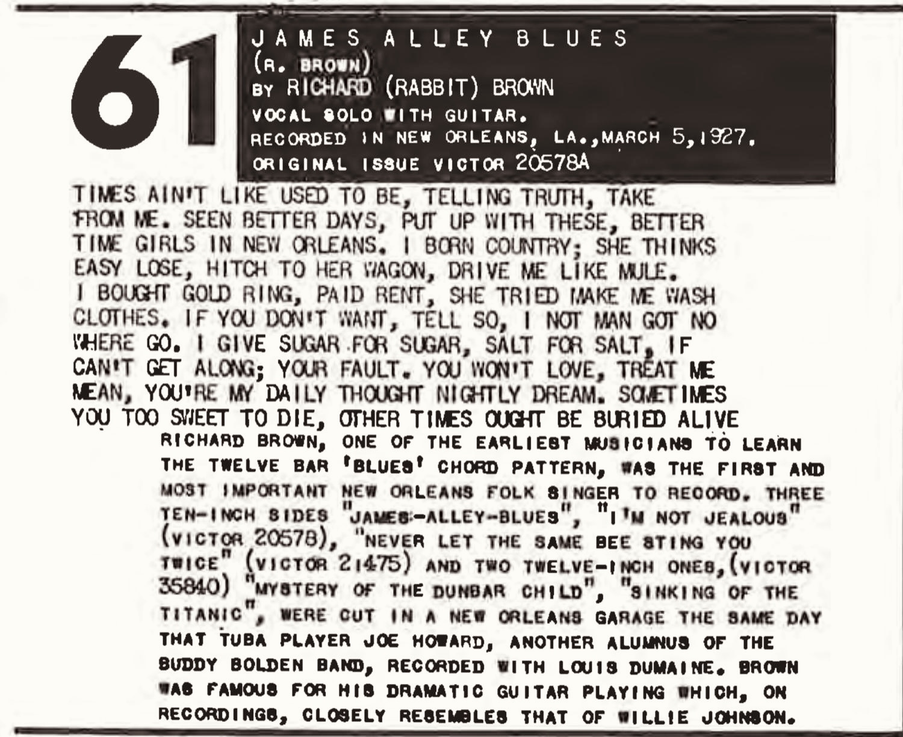
Of the songs Rabbit recorded for Victor Records, “James Alley Blues” is simply on its own level. It seems to be what Rabbit would have played if no one was listening, if he wrote songs for himself and not for others. There is no filler. There is not a wasted syllable. It is being sung by someone who was too busy to see the end and now it is all he sees. It is an expression of grievances about a relationship that has come to an end. The singer is done, not the Blood on the Tracks done, the “done” after those feelings fade. The personal truth one can only convey when those emotions are gone. It was Rabbit Brown writing for himself. “James Alley Blues” is what he was capable of writing if he was not so busy hustling. How many songs he had like it, we will never know, whether they were written or just not recorded. Instead of thinking of that, maybe we should just be thankful “James Alley Blues” got recorded at all. All evidence points to the song being written anywhere from months to days before his recording session. First, it follows a 12-bar blues structure, which had only become standard a few years prior. There is also the title of the song. Rabbit moves to 742 S. White (Jane Alley) at the end of 1926, only months before his recording session. There is also no anecdotal evidence that the song was known during his active years. Then there is the subject of the song. It would appear to be about Margaret. It is written just as their 15 years together are coming to an end. Virginia McKenzie was also coming into Rabbit’s life around the same time, but her biography does not match the subject in the song. And the scars in “James Alley Blues” are not new. Maybe the song was a final spark of brilliance or maybe it had been in the works for a few years and a recording session served as a ‘hanging at dawn to focus the mind’. The result: Rabbit had painted his masterpiece. But you would have not known it at the time. Rabbit was mostly forced to write songs within the parameters of pleasing a live audience. It’s hard to think of “James Alley Blues” not doing that, but the public’s palette rarely aligns with the best music being produced at the time. After Rabbit’s songs are released, music critic Abbe Niles chooses to tell his readers, some of the most educated in the country, about “Sinking of the Titanic”, not “James Alley Blues”. That occurs because Ralph Peer chooses to tell Abbe Niles about “Sinking of the Titanic”. It is not known whether Abbe Niles even hears “James Alley Blues”. Seeing as though Niles was one of the earliest writers to treat blues lyrics with the seriousness they deserved, one would think “James Alley Blues” would have appealed to him more than an event song like “Titanic”. That is if Niles even heard it. If Ralph Peer had not shared it with Niles, it would not be surprising. When Rabbit showed up to the recording session, Ralph Peer would have had him audition his songs and Peer would have decided which ones he wanted to record. That decision would have been based exclusively on Peer’s opinion of their commercial viability. Ralph Peer was not just the recording engineer for Rabbit’s session; he had been a central figure in the popularity of race records. While at Okeh Records in 1920, he had released Mamie Smith’s “Crazy Blues”, which is credited with starting the commercial blues craze. Only a few months after recording Rabbit, Peer would record Jimmie Rodgers and the Carter Family during his “Bristol Sessions”. Those recordings would be credited as the birth of commercial country music as we know it. Peer was legendary for his business acumen, having the vision to turn regional sounds into national commodities. And he had been a few feet away from Rabbit when he recorded “James Alley Blues”. So what did Peer think of “James Alley Blues”? He thought it was worth the $15 it cost to cut at the time. We know that. He likely recognizes the brilliance of the song. It’s hard not to. But Peer did not see much potential for it commercially, not as much as some of Rabbit’s other songs. That is probably why “James Alley Blues” is the first song Rabbit records during the session. Peer knows an artist who has never recorded will be more comfortable as the session goes on. Also, if technical issues occurred during the recording process, the first song had the highest probability of risk. As it turned out, it is the second song in Rabbit’s session that might have suffered that fate. “Great Northern Blues” was destroyed by Victor Records. There is only two reasons that would have occurred, either because of technical reasons or a song that Peer initially thought was more commercially viable than “James Alley Blues” when he heard it auditioned, was deemed unworthy of release when it was recorded. Where is “Sinking of the Titanic” recorded, the song Ralph Peer personally communicates with Abbe Niles about. It is recorded last. It is recorded when the artist would have been the most comfortable. Yet Ralph Peer would have also been watching closely for signs of fatigue. If Rabbit had shown any signs of it, “Sinking of the Titanic” would have been recorded immediately thereafter. We do not know how long the session lasts. Peer spent an entire day recording six songs for Ernest Phipps and His Holiness Quartet during the Bristol Sessions, and he cut twelve sides by the Carter Family over two days in that same stretch. Rabbit required minimal setup: one man, one guitar, no ensemble to balance or reposition. His session likely lasted six to eight hours. But Peer never showed signs of fatigue. Rabbit was recording his songs. He was not going to fatigue, regardless of his health. And that is why “Sinking of the Titanic” is recorded last. Ralph Peer thought through the pacing, order, and atmosphere of a session at that level; it is that meticulous attention to detail that led him to cultivating camellias in the latter part of his life. Peer lived in the details. And Ralph Peer never wavers from his initial assessment of “James Alley Blues”. He was sure “Sinking of the Titanic” would have the broadest appeal to audiences. Victor Records then includes “Never Let the Same Bee Sting You Twice” and “Mystery of the Dunbar Child” on flyers and newspaper advertisements listing its new releases. “James Alley Blues” is not promoted. Ralph Peer, and others at Victor, did not believe “James Alley Blues” had the potential to be one of the three most popular songs they released of Rabbit’s. There were only five songs in total. That might explain why Rabbit did not write other songs like “James Alleyt Blues” or, at least, why they were not recorded. And we should be careful to question Peer’s assessment of that song. If anyone went on to earn our trust on commercial viability and consumers during that period, it is Ralph Peer. In all likelihood, it was not as commercially viable at the time as the others. However, there is a lesson to be learned for anyone who takes such a bottom-line approach to music. That lesson occurs 25 years later. It is only “James Alley Blues” that pulls Rabbit’s name out of the dustbin of forgotten musicians when it becomes Song 61 on the Anthology of American Folk Music in 1952. Harry Smith had heard the song. He owned a copy of it. And unlike Peer, Harry Smith did not just view music as a for-profit venture. “James Alley Blues” might be the only example of Rabbit truly writing without any “for profit” consideration or without an audience in the forefront of his mind. He did not normally have that luxury. If Rabbit was going to have any type of musical life, he had to appeal to a broad audience, at least as broad as his style allowed. “Artistic integrity”, “artistic authenticity”, and “emotional credibility” were great, but they sure as fuck did not beat eating or making rent. When Charlie Patton, and others, lived and played on Dockery Farms, they were not burdened with pleasing an audience in the same way Rabbit was. Paradoxically, the restrictive settings of places like Dockery became fertile grounds for innovation: by removing the demand to satisfy public taste, it opened a space in which the foundations of the Delta blues could take shape. Rabbit would not have traded places with Patton, but Rabbit’s environment restricted the chance to leave more of a musical legacy. It left too many risks untaken, too many lines unwritten, too many subjects untouched. It left too much in the hands of the audience. And if a musician only gives the audience what they want, it is only a matter of time before they will have no audience left. It might be years, it might be decades, it might be after they die, but no musician can give the audience what they want at every moment and survive.
Mystery Too Sad to Tell
Without ever knowing how Rabbit met his end, it had been thought that he moved to Chicago after his Victor sessions. We now know Richard’s sister Vivian and his mother Agnes moved there in the mid-1920s. His brother-nephew James moved there around the same time. Lemon Nash talked about a nephew August, perhaps James, who moved there in the early 20s. A move to Chicago was a logical destination and the best explanation for why we never knew how or when Rabbit met his end. Chicago was a logical place to go if Rabbit’s focus was on music. It was a logical place to go if his focus was on a profession other than music and it was the most logical place to go if he was thinking about opportunities in both. And by 1927, we now know he had family there. Was that enough to leave New Orleans? First, Rabbit’s brother and sister were younger, and not all years are equal, depending on your occupation and lifestyle. By any standard, Rabbit would have had extra miles on his body. And like every generation that passes, there are increased expectations on “quality of life”. At 40 years old, was Rabbit content with living the life right in front of him, as he had been to that point? He was known in New Orleans. His songs were known. He was a musician by any standard whether he was able to think of it that way or not. He was not in a city with zero opportunity. How many gigs would be available to him upon his arrival in Chicago? How hard would he have to hustle to get them, to start all over again, even if he was now a recording artist? What we know is that Rabbit would have faced the decision of whether to stay in New Orleans throughout his adult life. It is a question that might have first surfaced in 1917 as the first wave of musicians started leaving. He would have been forced to consider it in the early 1920s as people like Papa Charlie Jackson and Louis Armstrong left. It would have knocked on his door in 1924 when his family began leaving. Every time it came up, at least until March of 1927, we know he decided to stay, but we never knew what he decided to do after March 1927, or after March 1929, if you are one of the people who believe Richard “Rabbit” Brown’s recording days in New Orleans were not over.
The Blind Willie Harrises
When “Where He Leads Me I Will Follow”, one of two religious songs by an obscure blues singer named Blind Willie Harris, was included on the 2003 box set, Goodbye, Babylon, the liner notes referenced how similar the singer sounded to Rabbit Brown. The fact that the songs were recorded in New Orleans only two years after Rabbit’s Victor recordings, and eight years before Rabbit was thought to have died, led some blues scholars and enthusiasts to state that it was Rabbit. And the similarities in their vocal stylings do exist. Since blues singers were often associated with producing “devil’s music” among black Christians, many would record religious songs under pseudonyms. The timing of the recordings is interesting for other reasons. The same month Blind Willie Harris recorded those two religious songs in New Orleans; another Willie Harris recorded for Brunswick Records in Chicago. That Willie Harris was born in 1893 in St. John the Baptist Parish, just outside New Orleans, and had moved to New Orleans by 1910. Brunswick Records then advertised him as “Blind” Willie Harris in Chicago. Blind did not always mean blind in the blues and he was not. These two Blind Willie Harrises were not the same person. The Willie Harris who moved from New Orleans to Chicago was younger, but his father Willie Harris Sr. disappears from public record after 1910. He would have been about 61 at the time the religious songs were recorded in New Orleans. Having two Blind Willie Harrises, both linked to New Orleans, appearing out of the blue during the same month, does not seem like a coincidence. But to answer if Rabbit was the Willie Harris in New Orleans, or any connection he might have had to the one in Chicago, we would first need to know what happened to Rabbit.
Hymn in the Wreckage
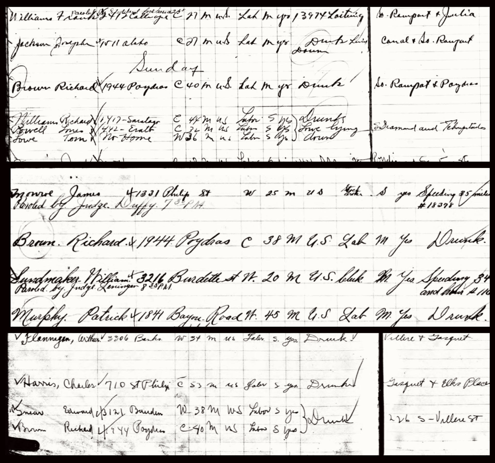
If you knew when and where Richard “Rabbit” Brown lived and the color of his skin, you might think you know how his story ends. We do not know if heavy drinking caused or was exacerbated by any events in his life, but his drinking seems to become an issue by 1926. His mother was in Chicago; Vivian and James were as well. In February, his father died of influenza. Whether by coincidence or consequence, Rabbit is then arrested in March, May, and July, almost two months to the day apart. They are all for “drunk”. This had followed two arrests from the year before, one of those was a “drunk” charge. Arrests were not new to Rabbit, but it had been years since his last. And there are not Loitering or Disturbing the Peace charges alongside most of these. These were not for performing or hanging out with friends; these were simply for being drunk: passed out on the street, barely able to stagger home intoxicated. For all of the unevenness in which laws and ordinances were enforced across race, someone was not going to be pulled off the street and take a “drunk” charge for no reason, certainly not five times in 18 months. It is after the 4th drunk arrest that Rabbit moves or is kicked out of the house at 1944 Poydras that he shared with Margaret. Ands that is how he landed in Jane Alley. Two weeks after he records for Victor Records, Rabbit is arrested for “drunk” again. It was Rabbit’s 7th arrest in 25 months, five for simply being drunk. Rabbit had been charged with it one time in the previous 39 years; that was the night he was celebrating his newest “darktown hit” with his brother Arthur; it was the “Sinking of the Titanic” arrest. It is in that context that the Victor recording session begins to seem like one last hymn rising up from the wreckage, except for the fact that, after that, Rabbit is never arrested again. It is not only the last record of an arrest; it is the last record of his life in New Orleans. And if he died around 1937, like was thought, that only led to two possibilities: Rabbit left New Orleans or he turned his life around. Rabbit would not have been able to stay on the same path without showing up in the police reports, not for 10 years, probably not even for 2 years. However, there is no evidence that Rabbit moved, not to Chicago, not to Memphis, not back to Covington, not anywhere. If he stayed in New Orleans and he recorded as Blind Willie Harris in 1929, then maybe the pieces fall into place. Did Rabbit find religion? That would have been the only power strong enough to make the Rabbit Brown we knew record his songs under a different name, especially after he had two more years to witness how important records were becoming for musicians to gain recognition. If drinking had cost Rabbit his family, his job, and maybe his health, and he had nowhere to turn, he might have turned to religion. We all know someone who has done the same; sometimes it even works. Did Rabbit disappear from the polce reports because he pulled his life together. Did he resurface two years later to record as Blind Willie Harris? Had Rabbit found religion?
Black Friday 1928
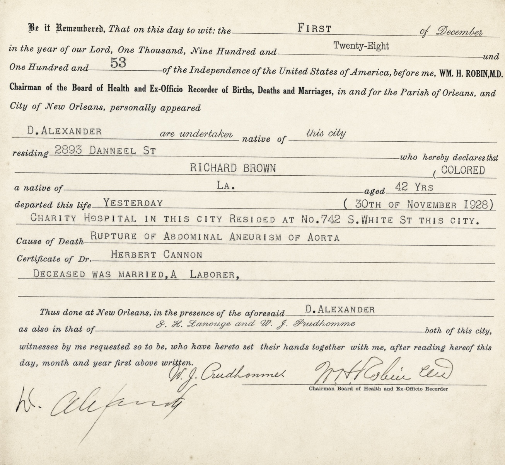
…the answer came right behind it. This moment, this place, in this way, this is how I die. It wasn’t Rabbit’s last thought, but it was the last one not deprived of oxygen. Rabbit went into hemorrhagic shock caused by the rupture of an abdominal aortic aneurysm. Richard Brown, a laborer, was dead. He was 43. Except that was how it ended. On November 30th, 1928. It was not with religion; it was with excessive alcohol use likely contributing to a gradual weakening of the aortic wall. He did not quit drinking. It was how Rabbit and others like him escaped the reality that they would have to work until the day their body gave out and died. That was if they were one of the lucky ones who did not die of disease or violence first. If Rabbit had lived a cleaner life, he might have lived long enough to learn that his only son, Richard Jr., died in a car crash at 19 years old. Or that Margaret died of burns after falling over a tub of boiling water. Or that his nephew, James Jr, became a professional musician in Chicago, only to die tragically at 22. Or that James Sr’s second son, whom he named after Rabbit, died at 4 months old. He might have been able to experience all those things if he had lived a cleaner life at the end. The reason Rabbit disappears after his recording session is because his life was over way sooner than we thought. He would not live another ten years after his recording session; he lived another twenty months. And the only reason he was not arrested during that time is because his health was probably deteriorating and it kept him closer to home. Law enforcement did not regularly patrol Jane Alley and usually only entered it if there was a major raid or murder. The only two arrests that occurred after he moved to Jane Alley were within months of him moving there and neither occurred near Jane Alley. One was on a streetcar right before his recording session and the other occurred when he returned to his old block on Poydras to see family or old friends. He had not found religion, he had not moved to Chicago, he had not recorded as Blind Willie Harris, Rabbit was dead.
The Aftermath
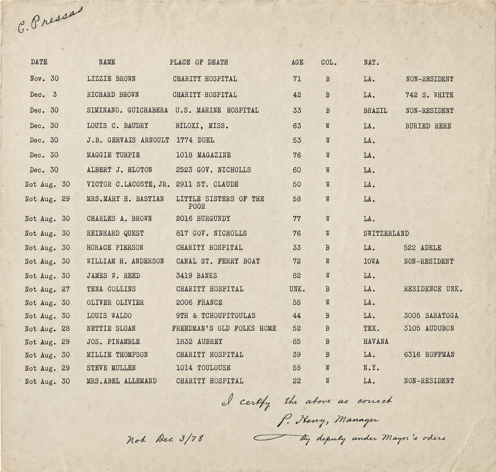
When D. Alexander loaded Rabbit’s body into the back of the black Packard, the top two stories of Charity Hospital were blocking the view of the boarding house Arthur and Rabbit had been arrested together at 16 years earlier, celebrating Rabbit’s newest “Darktown” hit. Now both were dead. The hearse pulled away and took a left on Claibourne and crossed over the 1900th block of Poydras. The block Rabbit had lived on most of his adult life, until things went bad with Margaret, until he left for Jane Alley. The next block was Lafayette Street. Margaret and Richard Jr. were living inside one of the houses the hearse turned left at. Did they even know that this was Rabbit’s new ride? The hearse stayed straight, passing over Howard, Liberty, Franklin, Saratoga, all streets that Rabbit had played on. The last street they crossed over was South Rampart; it was packed on that Saturday. No one knew D. Alexander, undertaker, would soon be coming for it too. Alexander took a right on Dryades and crossed over the railroad tracks. Metal and glass rattled all around Rabbit in the back, but Rabbit was out of moves. D. Alexander walked into the Board of Health at 1300 Perdido Street and handed the clerk both his and the physician’s notes. The clerk grabbed a blank death certificate and loaded it into the typewriter. The clerk typed the names and dates first and then began filling out information in the notes. When she got to the last two lines she wrote, “deceased was married, a laborer, and…”. The typewriter ran out of ribbon. The last line would have been “and the son of Henry Brown and Agnes Bell”. But it was never written. They didn’t bother to change the ribbon - or flip it. Or maybe the clerk did and then realized the information was nowhere in the notes. Whatever happened, two officials at the Board of Health and D. Alexander decided it wasn’t necessary to list any next of kin. It was not necessary to say where the body would be buried or shipped. It is not like someone would need that information again one day. Not for Richard Brown. Two officials at the Board of Health stamped their signatures and D. Alexander signed it by hand. It was official.
The City That Forgot More Than Care
Rabbit’s death occurs the day after Thanksgiving. You can’t say Charity Hospital, the Board of Health, or the undertaker was understaffed, but it is safe to say they were not overstaffed. People with the ability to take a day off could look at a 1928 calendar and figure out how to get a 4-day vacation by missing one or two days of work. For Rabbit, that Friday is no different than any other. He is probably doing day labor somewhere close to his house if he’s even in condition to work. His drinking has not allowed for consistent employment in a few years. Wherever he is at on that day, it is close to Charity Hospital. His home was .96 miles away and that is likely the furthest he would have been. He probably arrives at Charity Hospital unconscious but breathing. He is pronounced dead soon after arrival. Rabbit’s body is sent to the morgue on the basement floor and either Friday night or Saturday morning, the cause of death is determined. The hospital ward gets Rabbit’s age from an earlier admission log. Either a next of kin is not known or, if it is, it is listed in the notes. The ward notifies the Board of Health of the death, and they assign Daniel Alexander as the Undertaker. Alexander is an employee for George Geddes Undertaking and Embalming, one of the earliest black owned funeral homes in the country. D. Alexander was not an Undertaker; he was a body collector and, on that day, he was probably moonlighting for the Board of Health because Rabbit’s body had gone unclaimed. Alexander picks up the body on Saturday and goes to the Board of Health to sign the death certificate and pick up the burial permit. He drops the body off at Holt Cemetery on Saturday and Rabbit is probably buried on Sunday or Monday morning. If the physician’s notes did not include a next of kin and D. Alexander wanted to start with a clean slate on Monday morning, he stops at 742 S. White on his way back home to try to locate a next of kin. At this point, it is his responsibility to find one and give that information to the Board of Health, so they can update their records. If Alexander entertains going to Jane Alley on a Saturday evening, he finds first and second-generation Italians as neighbors on one side, the Armstrong family is on the other side, they are much younger. He would have found Virginia McKenzie, the divorcee who was living with Rabbit. She would not have been much help. She just knows she has to move. It’s December 1st. Rent is due. It’s more likely that D. Alexander goes home and never wraps up that loose end from the weekend. Rabbit’s death is one line in the newspaper. It seems like the news does not makes it to his family in Chicago. He is not listed as late in his mother’s obituary five years later. The family thinks he is dead, but they do not know for sure. And that is probably how it ended, exactly like we thought before we knew anything about him: an unclaimed body, a potter’s field burial and deficient death records. But as late as 1925, that didn’t seem probable.
Last Thoughts on Rabbit Brown
There is a permanent exhibit on Louis Armstrong at the New Orleans Jazz Museum called “It All Started in Jane Alley”. That narrow backstreet came to symbolize the hardships of Armstrong’s youth and the beginnings of a musical career that transcended all racial and geographical boundaries. For Rabbit, it all ended in Jane Alley. Jane Alley was not an address; it was a condition that defined his last years. Armstrong’s connection to the neighborhood became a point of pride, Rabbit’s presence there reflected a descent. In the end, New Orleans made one of those artists leave to realize his dreams and the other unable to dream of anything beyond it.
Afterwords
In October of 1997, the same year I heard “James Alley Blues” for the first time, the same year I made that deathbed promise to my grandmother, the same month I saw Bob Dylan live for the first time on Halloween night at Coleman Coliseum in Tuscaloosa, there was a concert to celebrate the reissue of Harry Smith’s Anthology of American Folk Music just outside Washington, D.C. Greil Marcus recalled how Jeff Tweedy took the stage and, accompanied by Uncle Tupelo co-founder Jay Bennett, delivered the opening line to “James Alley Blues”: “times right now ain’t nothing like they used to be”. It was one of those small intimate concerts attended by writers and musicologists, by friends, family, and fellow musicians, by people with publishers, the educated, the elite, before that became a negative thing. It was attended by the type of people who never let the name Richard “Rabbit” Brown die. It was being sung by one of the musicians who never let his name die, Jeff Tweedy. Rabbit would have loved the idea of someone like Tweedy covering his song. And whether anyone wanted to hear a different answer or not, “Misunderstood” would have been his favorite Tweedy song. Because that was the type of song Rabbit had to write. He had to connect with as many people as possible, just as that song connected with a generation of serotonin starved twenty-somethings, intentionally or not. It connected with me. Rabbit didn’t have the benefit of letting the audience come to him. Rabbit didn’t eat well at night if he let the audience come to him. But “Misunderstood” is also a song that stays true to the writer. It doesn’t pander; it doesn’t deliver lines that aren’t emotionally credible. It was Tweedy sending a message: you’re not going to confine me to some artificial boundaries. There was another artist who dealt with the same expectations on a much larger scale 30 plus years earlier and Timothee Chalamet starred in a movie that put the 44th nail in the coffin of that debate. But the closest Rabbit ever gets to writing with the freedom Tweedy or Dylan were able to write with is “James Alley Blues”. Rabbit could have cut the umbilical cord at the birth of Jazz: he lived in the same place, at the same time, around the same people, but if he had, he would not have been able to tell the story. Jazz just didn’t allow for it. So Rabbit went his own way. Words were what separated him from those around him. After Tweedy delivered the final couplet of some of those words: “yeah, sometimes I think that you’re just too sweet to die/and other times I think you oughta be buried alive”, you could hear a woman call out “that kid” in astonishment. 700 miles away, inside a pink house on 13th Street in Tuscaloosa, I was waiting to hear the same two words, said in the same way, said about me. And then one day you wake up, and you just don’t expect to hear them anymore. But Jeff Tweedy heard “that kid”. Dylan heard it a million times. And if you believe in the cosmic dimension to music, you have to believe those two words traveled through Tweedy and headed South, stopping over in Tuscaloosa on Halloween night to listen to Bob Dylan sing “Blind Willie McTell” to a 22 year old kid standing 6 feet away and nobody else, then they took the same roads I took on the trip I bought the Anthology of American Folk Music on, passing through Jimmie Rodgers hometown on the way. But an hour before Baton Rouge, they got off at the Covington exit, the town where Rabbit was born, went straight through my hometown of Mandeville, crossed Lake Pontchartrain, where Rabbit played on, and then came to New Orleans and drifted over Holt Cemetery, and those two words found Rabbit 28 years before I did. That kid. It’s never going to be said about anything I write, but maybe you read this and you say it about Rabbit. The old man who sang “James Alley Blues” to me when I was 22, he wasn’t an old man at all. He turned 43 two days before he died, 7 years younger than I am now. But he followed his dream. He followed his music. And that is why he will outlive me. And I hope he does. And I hope I helped. That’s a hill I will die on. Not just for what Rabbit created, but for all the work lost to circumstance and time.
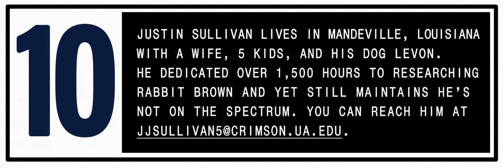
jjsullivan5@crimson.ua.eduInteractive StoryMap
Trace the search for Richard "Rabbit" Brown across time, place, archive and memory
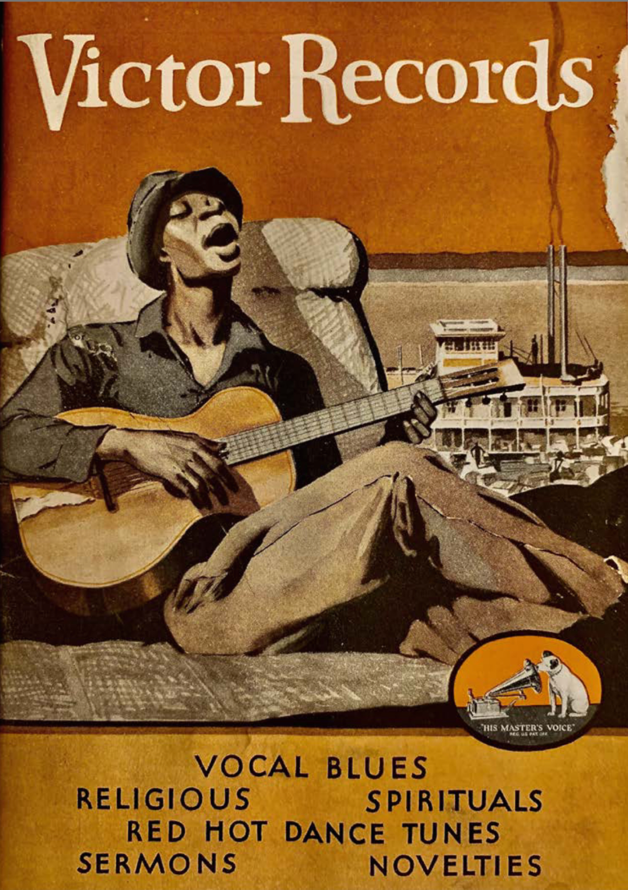
Sources
The 1927 Bristol Sessions Story: Resource Document. Birthplace of Country Music Museum, 2022, p. 7. Birthplace of Country Music, birthplaceofcountrymusic.org. Accessed 25 Nov. 2025. “Another Flag Raised: The Third Patriotic Celebration by Fisk Public School.” The Daily Picayune (New Orleans, LA), 3 Apr. 1897, p. 3. Anthology of American Folk Music. Edited by Harry Smith, Folkways Records, 1952. Armstrong, Louis. Satchmo: My Life in New Orleans. Prentice-Hall, 1954. Barry, John M. Rising Tide: The Great Mississippi Flood of 1927 and How It Changed America. Simon & Schuster, 1997. “Billing Now Pending in the Legislature If Made Law Will Put End to Fish Fries,” The Times Picayune. 07 June 14. p. 22. Newspapers.com. “Blind Willie Harris Brunswick Records Advertisement.” The Chicago Defender, 14 Sept. 1929, p. 9. Newspapers.com. Breed, Allen G. “Man Convicted in 1912 Kidnapping Cleared by DNA Evidence.” Seattle Post-Intelligencer, 4 May 2004. Accessed Online 8 Nov. 2025. “Bright Public School Pupils.” The Daily Picayune (New Orleans). 30 June 1893. p. 11. Accessed Online. GenealogyBank. Brown, Richard Jr. Birth Certificate, 4 Aug. 1912. Orleans Parish, Louisiana. Louisiana State Archives, Baton Rouge. Microfilm vol. 158, p. 78. Brown, Richard “Rabbit.” Discography of American Historical Recordings. UC Santa Barbara Library, 2025. Accessed Online. Brown, Richard “Rabbit” Brown.” “Downfall of the Lion”. Partial Lyrics. Documented in Kevin Fontenot’s “Times Ain’t Like They Used To Be: Richard ‘Rabbit’ Brown, New Orleans Songster.” Brown, Richard “Rabbit.” “Gyp the Blood”. Never Recorded. Documented in Kevin Fontenot’s “Times Ain’t Like They Used to Be: Richard ‘Rabbit’ Brown, New Orleans Songster.” Brown, Richard “Rabbit.” “I’m Not Jealous.” 1927. Victor Records, 20872-B. Brown, Richard “Rabbit.” “James Alley Blues.” 1927. Victor Records, 20957-B. Brown, Richard “Rabbit.” “Mystery of the Dunbar’s Child.” 1927. Victor Records, 20957-A. Brown, Richard “Rabbit.” “Don’t Let the Same Bee Sting You Twice.” 1927. Victor Records, 20872-A. Brown, Richard “Rabbit.” “Sinking of the Titanic.” 1927. Victor Records, 20935-A. “Burns Kill Victim of Boiling Water.” The Times-Picayune (New Orleans, LA), 18 Jan. 1940, p. 2. Newspapers.com Brunious, John “Picky” Interview, 1959-05-26. Interview by Bill Russell, 1959, https://archives.tulane.edu/repositories/3/resources/2008. A Closer Walk NOLA. “Fisk School.” Preservation Resource Center of New Orleans, Accessed Online 8 Nov. 2025. “Coming of Zulu King Gorgeous, Lively Rampart St. Spectacle.” New Orleans Item (New Orleans, LA). 9 Feb. 1921, p. 8. Cook, Ann. Discography of American Historical Recordings. UC Santa Barbara Library, 2025. Accessed Online 23 November 2025. Crosby, Stills, Nash & Young. “Ohio”. Atlantic Records, 1970. “Dancers Here Like Their Music Served Hot; Treat Awaits Them”. The Times Picayune. 26 March 1925. p. 17. Accessed on Newspapers.com. Dawson, Eddie. Interview. 31 Jan. 1962. Hogan Jazz Archive Oral History Collection, Tulane University. Death Certificate of Agnes Brown, 7 Sept. 1935. Cook County, Illinois Department of Public Health, Division of Vital Statistics. Death Certificate of Arthur Brown, 21 Apr. 1922. Orleans Parish Board of Health, New Orleans, Louisiana. Death Certificate of James Brown, 16 Nov. 1942. Cook County, Illinois Department of Public Health, Division of Vital Statistics. Death Certificate of Marguerite Hodge, 17 Jan. 1940. Orleans Parish Board of Health, New Orleans, Louisiana. Death Certificate of Richard Brown, 30 Nov. 1928. Orleans Parish Board of Health, New Orleans, Louisiana. Death Certificate of Richard Brown, 3 Mar. 1934. Cook County, Illinois Department of Public Health, Division of Vital Statistics. Death Record of Henry N. Brown (Orleans Parish, 1926). Orleans Parish Board of Health, New Orleans, Louisiana. Willie Harris – Discography.” Discogs.com, edited by Discogs Users, Accessed 8 Nov. 2025. Dumaine, Louis. Discography of American Historical Recordings. UC Santa Barbara Library, 2025. Accessed Online. Dylan, Bob. Blood on the Tracks. Columbia Records, 1975. Faulkner, William. As I Lay Dying. Jonathan Cape and Harrison Smith, 1930. “$15,000 Is Loss, 11 Houses in Fire Path Go.” New Orleans Item, 17 February 1923, p. 1, 2. GeneologyBank. “Fisk School.” The Daily Picayune (New Orleans, LA), 1 July 1898, p. 20. “Fisk School.” The Daily Picayune (New Orleans, LA), 1 July 1899, p. 14. Fontenot, Kevin. Telephone Interview. 12 September 2025. Fontenot, Kevin S. “Times Ain’t Like They Used to Be: Richard ‘Rabbit’ Brown, New Orleans Songster.” My Old Weird America, oldweirdamerica.wordpress.com. Accessed 8 Aug. 2025. “Four Killed, Six Injured as Auto Falls into Canal.” The Times-Picayune, 5 July 1933, Front Page. Newspapers.com. Goodbye Babylon. Disc 4. Various Artists. Dust-to-Digital. 2004. Gushee, Lawerence. “Black Professional Musicians in c1880”. IAMR – Revista de Investigación de Artes y Música. iamr.uchile.cl/index.php/IAMR/article/download/53555/56148. Accessed 11 Nov. 2025. House, Son. “Preachin’ the Blues.” Paramount Records, 1930. “Jazz Records Produced Here: Orleans Orchestras Turning Out Canned Melodies for Okeh.” New Orleans States (New Orleans, LA). 25 Jan. 1925, p. 12. GenealogyBank. Johnson, Robert. “Stones in My Passway.” Vocalion Records, 1937. “King of Zululand Pays Annual Visit to N. O. Subjects.” New Orleans Item. Feb. 7, 1921, p. 3. Louis Dumaine’s Jazzola Eight – New Orleans 1927. Archive.org. Uploaded by Difundiendo el Jazz, 15 May 2017. Archive.org/details/04LouisDumaineJazzolaEightRedOnionDrag “Louisiana, Parish Marriages, 1787–1958.” FamilySearch, 19 Sept. 1921. Accessed 8 Nov. 2025. James Brown and Irma Sewell. “Louisiana, Parish Marriages, 1787–1958.” FamilySearch, 2 Dec. 1913. Accessed 8 Nov. 2025. Vivian Brown. Louisiana State Archives. New Orleans Police Department Arrest Ledgers, 1903–1927. Baton Rouge, LA. Louisiana State Museums. It All Started in Jane Alley: Louis Armstrong in New Orleans. New Orleans Jazz Museum at the Old U.S. Mint, 1 Aug. 2024. Louisiana State Museum. Marcus, Greil. Invisible Republic: Bob Dylan’s Basement Tapes. Henry Holt and Company. 1997. Mississippi Rails. “New Orleans Great Northern Railroad.” Mississippi Rails, msrailroads.com/NOGN.htm. Accessed 30 Nov. 2025. Napoleon, Chelsey Richard. “Zulu Social Aid and Pleasure Club.” Clerk of Civil District Court Notarial Archives, 4 Feb. 2022. Nash, Lemon, et al. Lemon Nash Interviews, 3 Oct. 1959–20 June 1961. Interviews by Richard B. Allen, Marjorie Zander, and others. Tulane University, Hogan Jazz Archive, New Orleans. Naylor, Brian. “‘Blowin’ In the Wind’ Still Asks the Hard Questions.” NPR, 21 Oct. 2000. “New Orleans Great Northern Railroad.” Wikipedia, Wikimedia Foundation, https://en.wikipedia.org/wiki/New_Orleans_Great_Northern_Railroad. Accessed 30 Nov. 2025. “Negro Night Singers Disturbers of Peace.” The Times-Democrat (New Orleans, LA). 23 July 1912, p. 4. New Orleans Police Department. Arrest Records of Richard “Rabbit” Brown, 23 August 1907, 13 September 1908, 10 June 1911, 28 July 1911, 14 September 1914, 10 August 1916, 4 January 1925, 25 March 1926, 23 May 1926, 25 July 1926, 12 January 1927, 20 March 1927. New Orleans Police Department Arrest Books, 1881–1931. New Orleans Public Library City Archive and Special Collections. Ancestry 2023. Accessed Online 2025. New Orleans Public Library. “Brown, Richard.” Louisiana Biography and Obituary Index, Louisiana Division/City Archives, New Orleans Public Library, death date 30 Nov. 1928. “New Southern Songs and Ballads.” The Pensacola News Journal. 21 Oct. 1927, p. 8. “New Victor Race Records.” Golden Mystics of Old Time Music, 2021, goldenmysticsofoldtimemusic.com/gallery/race-record-catalogs-flyers/. Accessed 28 October 2025. Niles, Abbe. “Ballads, Songs, and Snatches.” The Bookman, vol. 67, July 1928, pp. 565–566. Patton, Charley. “High Water Everywhere.” Paramount Records, 1930. Percy, Walker. “Why I Live Where I Live.” Esquire Classic, 1 Apr. 1980. “Police to Put Tax on Permits Used,” The Daily Picayune. 10 April 1914. p. 2. GeneologyBank. Rabbit Brown’s Orleans Parish Marriage Certificate. Louisiana Vital Records, 1909. Accessed at FamilySearch Center, Metairie, LA. Raeburn, Bruce Boyd. “The Storyville Exodus Revisited, or Why Louis Armstrong Didn’t Leave in November 1917, Like the Movie Said He Did.” The Southern Quarterly, vol. 52, no. 2, 2015, pp. 10–33. Randall Brown Birth Certificate. Orleans Parish Vital Records, 1887. Louisiana State Archives, Baton Rouge. “Rex Will Parade amid Splendors of Pre-War Days.” The Times-Picayune (New Orleans, LA), 6 Feb. 1921, p. 1, 4. Newspapers.com. “Routed by Fire, Scores Suffer in Icy Cold.” The New Orleans States. 17 Feb. 1923, p. 1, 2. Sanborn Fire Insurance Map from New Orleans, Orleans Parish, Louisiana. Vol. 3, 1908. Sanborn Map Company. Map. Library of Congress. Accessed 2025. Sanborn Map Company. Sanborn Fire Insurance Map from New Orleans, Orleans Parish, Louisiana. Vol. 3, Plate 270, 1908. Map. Library of Congress. Accessed 2025. Sanborn Map Company. Sanborn Fire Insurance Map from New Orleans, Orleans Parish, Louisiana. Vol. 3, Plate 275, 1908. Map. Library of Congress. Accessed 2025. Sanborn Map Company. Sanborn Fire Insurance Map from New Orleans, Orleans Parish, Louisiana. Vol. 3, Plate 276, 1908. Map. Library of Congress. Accessed 2025. Sanborn Map Company. Sanborn Fire Insurance Map from New Orleans, Orleans Parish, Louisiana. Vol. 3, Plate 291, 1908. Map. Library of Congress. Accessed 2025. Sanborn Fire Insurance Map from Covington, St. Tammany Parish, Louisiana. Sanborn Map Company, 1904. Map. Library of Congress. Accessed 2025. “Slew Sleep with Strains of Music.” The New Orleans Item (New Orleans, LA). 23 July 1912, p.2 Soanes’ New Orleans City Directories 1900-1928. Soanes Directory Co. Ancestry.com. “The 1927 Mississippi River Flood: Historical Rainfall and Levee Breaks.” NOAA, 1927. Tucker, Stephen R. “Louisiana Folk and Regional Popular Music Traditions on Records and the Radio: An Historical Overview with Suggestions for Future Research.” Folklife in Louisiana: A Guide to the State, Louisiana Folklife Program, Office of Cultural Development, 1985. LouisianaFolklife.org. Tulane University. Hogan Jazz Archive Oral History Series. Tulane University Libraries, New Orleans, LA. Board of Health, New Orleans. Death Certificate of Richard Brown, 1928. Louisiana Vital Records Office, New Orleans. United States. Bureau of the Census. 1860, 1870, 1880, 1890, 1900, 1910, 1920, 1930, 1940, 1950, 1960: Population Schedules, Orleans Parish, Louisiana, Accessed on Ancestry.com United States Census, 1880. Ward 3, Orleans Parish, Louisiana. National Archives and Records Administration, microfilm roll T9. Accessed Online. United States. Selective Service System. World War I Draft Registration Cards, 1917–1918: Louisiana, Orleans County. National Archives and Records Administration, microfilm roll M1509. Ancestry.com. U.S., City Directories, 1822–1995. Database on-line. Ancestry.com Operations, Inc., 2011. Entry for Daniel Alexander, etc. U.S., World War I Draft Registration Card for Richard Brown, 1917–1918. National Archives and Records Administration, microfilm roll M1509. Ancestry.com. Vincent, Clarence “Little Dad.” Interview, 17 Nov. 1959. Interview by Richard B. Allen and Paul Crawford. Tulane University, Hogan Jazz Archive, New Orleans. PDF File. Audio Link Remains Broken, Tulane. Wells, Jonathan. “Forget Bob Dylan. Leonard Cohen Should Have Been the First Songwriter to Win a Nobel Prize for Literature.” The Gentleman’s Journal, Accessed 8 Aug. 2025. White, Horace “One Leg Horse.” Interview, 3 Mar. 1961. Interview by Richard B. Allen and Marjorie Zander. Tulane University, Hogan Jazz Archive, New Orleans. Wikipedia. “Rabbit Brown.” Wikipedia: The Free Encyclopedia, Accessed 8 Nov. 2025. “Zulu King Comes Here for Carnival.” The Times-Picayune. Feb. 8, 1921, p.3
Additional Sources
“Agnes Brown Obituary.” The Chicago Defender (Chicago, IL), 14 Sept. 1935, p. 3. Newspapers.com. Brown, August James. World War II Draft Registration Card, 1940, Chicago, Illinois. Selective Service System. Ancestry.com. Brown, Eula. Death Certificate, 25 July 1927, Wallace, St. John the Baptist Parish, Louisiana. Louisiana State Board of Health. FamilySearch. Chat GPT, OpenAI, 2025 “Cold Weather to Continue.” The New Orleans States (New Orleans, LA), 17 Feb. 1923, p. 1. GenealogyBank. Eagle, Bob. “Richard ‘Rabbit’ Brown.” Blues Gospel Music, 26 May 2024, Facebook. Garnett, Joseph; Garnett, William.U.S. Army Service Records, 1918–1919. National Archives and Records Administration (NARA). Ancestry.com. Garnett, Joseph Death Certificate, 13 Dec. 1959, New Orleans, Louisiana. Louisiana Department of Health, Division of Vital Statistics. FamilySearch. Guitar Evangelists, 1928–1951: The Complete Recorded Works. Document Records, DOCD-5101. Harris, William Jr. Death Certificate, 21 May 1930, New Orleans, Louisiana. Louisiana State Board of Health. FamilySearch. Harris, Willie. World War II Draft Registration Card, 27 Apr. 1942. Selective Service System. Ancestry.com Holland, Edna. Death Certificate, 25 Dec. 1960, New Orleans, Louisiana. Louisiana Department of Health, Division of Vital Statistics. FamilySearch. Holland Samuel and Victoria Williams. Marriage Certificate, 1 Apr. 1889, Orleans Parish, Louisiana. Louisiana Vital Records. FamilySearch. Jones, Terry L. “The Strange Case of Bobby Dunbar: A Missing Child, Replaced by Another.” Country Roads Magazine, 22 Feb. 2021, countryroadsmagazine.com/art-and-culture/history/the-strange-case-of-bobby-dunbar/. Larkin, Colin, editor. The Guinness Who’s Who of Blues. 2nd ed., Guinness Publishing, 1995. McKenzie, Virginia. Death Certificate, 28 Dec. 1966, New Orleans, Louisiana. Louisiana Department of Health, Division of Vital Statistics. FamilySearch. Minor, Sidney A., and Annette L. Brown. Marriage Certificate, 28 June 1898, Orleans Parish, Louisiana. Louisiana Vital Records. FamilySearch. Nash, Lemon. Lemon Nash 9-28-1960. 28 Sept. 1960. Music Rising at Tulane University, https://musicrising.tulane.edu/wp-content/uploads/sites/3/2018/07/l.nash-9-28-1960.pdf. PDF download. Never Let the Same Bee Sting You Twice: Blues, Ballads, Rags, and Gospel in the Songster Tradition. Document Records, DOCD-5678. New Orleans Police Department. New Orleans Police Department Arrest Books, 1881–1931. New Orleans Public Library City Archive and Special Collections. Ancestry 2023. Accessed Online 2025. “Obituary of Agnes Brown.” The Times-Picayune (New Orleans, LA), 9 Sept. 1935, p. 2. GenealogyBank. Roudez, Herbert Sterling. World War II Draft Registration Card, 1942, Chicago, Illinois. Selective Service System. Ancestry.com Storyville, New Orleans, 1900–1913. Map by Paul E. Miller and Richard J. Jones. Library of Congress, www.loc.gov. “10 Are Reported Dead as Holiday Toll This Year.” The Times-Picayune (New Orleans, LA), Associated Press, 4 July 1930, p. 1. GenealogyBank. Wald, Elijah. “Hesitation Blues (Deep History of a Dirty Blues).” Old Friends: A Songobiography, 11 July 2016, www.elijahwald.com/songblog/hesitation-blues/. Accessed 25 Aug. 2025. Wald, Elijah. “James Alley Blues.” Elijah Walz’s Song Blog, elijahwald.com/songblog/james-alley. Accessed 22 Aug. 2025. Wright, Albert, and Anna Miller Marriage License, 11 Nov. 1912, Orleans Parish, Louisiana. Vital Records. FamilySearch.
Reader Responses
Comments will appear here once the live site is connected to Cusdis.
Comments will load here on the live site.